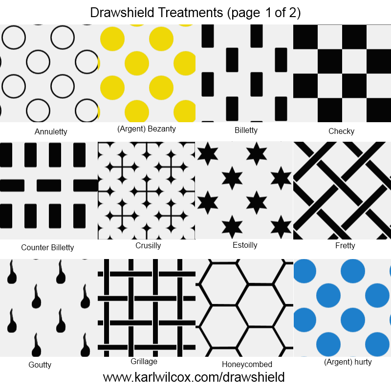

Treatments are patterns of repeated shapes that are typically applied to the field but can also be applied to the larger ordinaries or divisions. DrawShield supports the following two colour treatments:
annuletty, billetty, checky, checky-of-9, compony, counter-billetty, crusily, ermined, estoilly, fretty, goutty, grillage, honeycombed, lozengy, maily, masoned, mulletty, papelonny, plumetty, potenty, scaly, seme-de-lys, vairy
By default, mulletty has the field strewn with five pointed stars. Alternatively you may use mulletty of n points; where n can be 5, 6, 7, 8, 9 or 10 and the word "points" is optional.
The following treatments with fixed colour roundels are also supported:
bezanty, hurty, platy
It is also possible to create your own treatments by defining a field "strewn" with charges, for exammple argent seme de bees or, a white field scattered with yellow bees.